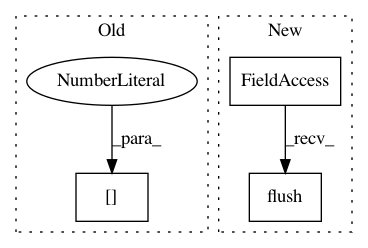

04d0a9bbfc085d244ee5abed1e4591202a8bd4cb,web/minstServingHandler.py,,do_inference,#Any#Any#,130
Before Change
tf.contrib.util.make_tensor_proto(img_new_arr, shape=[1, img_new_arr.size]))
result_future = stub.Predict.future(request, 5.0) // 5 seconds
result_future.add_done_callback(
_create_rpc_callback(label[0], result_counter))
print("////////////////////////")
return result_counter.get_error_rate()
After Change
print(exception)
else:
sys.stdout.write(".")
sys.stdout.flush()
response = numpy.array(
result_future.result().outputs["scores"].float_val)
// print("response:\n",result_future.result())
prediction = str(numpy.argmax(response))
In pattern: SUPERPATTERN
Frequency: 4
Non-data size: 3
Instances
Project Name: pythonstock/stock
Commit Name: 04d0a9bbfc085d244ee5abed1e4591202a8bd4cb
Time: 2017-10-26
Author: yhy
File Name: web/minstServingHandler.py
Class Name:
Method Name: do_inference
Project Name: NVIDIA/sentiment-discovery
Commit Name: bfebb3f586ce9e7d6d14c45329ef651d48a01d03
Time: 2018-11-21
Author: raulp@nvidia.com
File Name: new_main.py
Class Name:
Method Name: main
Project Name: arnomoonens/yarll
Commit Name: eee4fee52f1d389230fa6daf7473e0e8c688a05a
Time: 2018-01-23
Author: x-006@hotmail.com
File Name: agents/a3c.py
Class Name: A3CTask
Method Name: run
Project Name: QUANTAXIS/QUANTAXIS
Commit Name: af3878b1688c6fb69ec0d9ab817998783536da4b
Time: 2018-05-15
Author: wang_xiao_zhen@hotmail.com
File Name: QUANTAXIS_Test/QAFetch_Test/QATdx_Test.py
Class Name: Test_QA_Fetch
Method Name: extraDataFromDAD